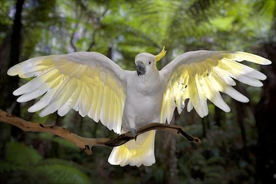
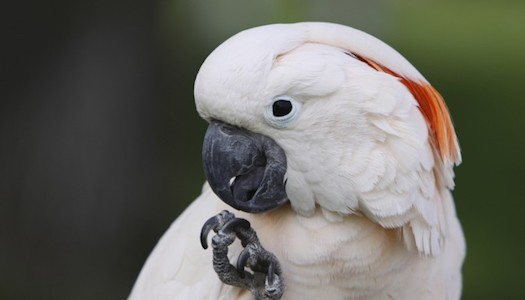

Wow! Based on your answers... You share similarities with the Cockatoo (Cacatuidae)

The Cockatoo is a visusally beautiful bird with a laid-back and cuddly personality. If an owner has a good relationship with their Cockatoo, these bird really enjoy physical touch and socialization with the ability to "talk" (replicate sound). They will even bob their head up and down when they get excited when you're around. Like a Cockatoo, you are a laid-back, affectionate, intelligent, playful and even mischevious person who enjoys intimate physical touch.
Click on Ceasar to Restart!